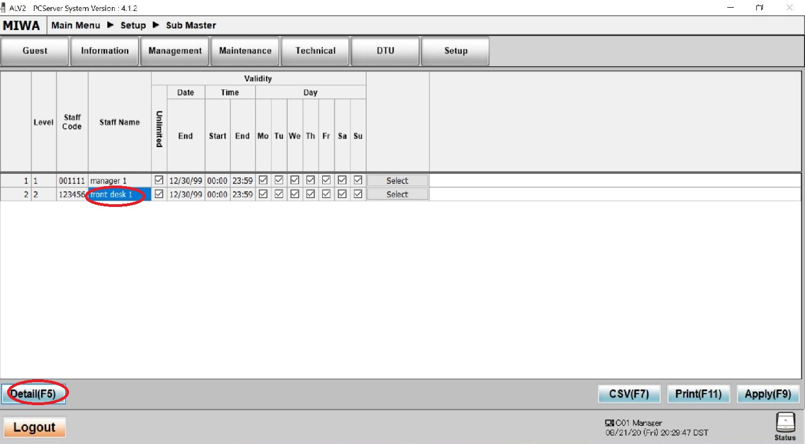

Contact Phone # 949-328-5280
9272 Jeronimo Road, Irvine CA 92618
Technical Support Website V1.37 (automated G.RNCN)
Frequently Asked Questions for ALV2 Locks:
---LOCK (Guest and Common Door) RELATED QUESTIONS---
L1) How to Reprogram a lock as a guest or common door?
TABLET DTU:
*Double click the DTU Icon and select yes on allowing changes
*Make Sure the Date/Time is Correct in the upper right hand corner before reprogramming
*To Exit the DTU Software:
From Main Menu, Select Setup DTU, select Exit
(Selecting Bye will not exit the software!)
Programming a Guest Door
With DTU Software Open –
Sign in w/ Staff Code
a.) Select IrDA (skip if it doesn’t ask you)
b.) on Main Menu select Lock Initialization
c.) select Guest Door
d.) Set the Room No., Set Floor No. and press confirm (bottom right)
e.) Use DTU card against door and put away, light should be orange, Lock can only be programmed with Orange Light Is On
f.) Aim DTU Tablet and press send
*If you have the P-Type (Wide) locks, aim at the Upper Right corner (3-4 inches away) as shown in the picture
*If you have the Slim Type locks, aim at the Center (3-4 inches away)
*If you have a wall reader (square matte black box), aim at the center
Programming a Common Door
With DTU Software Open—
Sign in w/ Staff Code
a.) Select IrDA (skip if it doesn’t ask you)
b.) on Main Menu select Lock Initialization
c.) select Common Door
d.) Set the Room No (Room # is not important w/ common doors)
e.) Set the Room Range (Hotel’s Lowest Room# to Highest Room#), Then Press Confirm
f.) If you want guests to only be able to use during certain hours, i.e. gym/pool door, enter Guest Start/End Time using military time.
f2.) If you want to door to stay unlocked and not require a key card during certain hours, scroll down, go to Auto Time Zone and set the start and end hours military time
g.) Use DTU card against door should light Orange and put away card, Lock can only be programmed with Orange Light Is On
h.) Aim DTU Tablet and press send
*If you have the P-Type (Wide) locks, aim at the Upper Right corner (3-4 inches away) as shown in the picture
*If you have the Slim Type locks, aim at the Center (3-4 inches away)
*If you have a wall reader (square matte black box), aim at the center
Note: If you want to disable guests and only allow staff to enter a room:
Program it as a common door, but on step f, change the guest start to 00:00 and guest end to 00:01
If you lost your DTU Card- you can make a new one from the Front Desk ALV2 PC Server
Log in as a manager, and click on Management, click on the DTU Card.
Make sure the Duplicate box is Checked, and issue the card.
You'll have to use a management key
KEYPAD DTU:
*Before Programming- Check the date/time by turning on, enter staff code/password, Press 1 (R/C), F2, F2, Enter the date on W-3 and (military) time on W-4 (hours,minutes,seconds).
If on W-5 or higher, keep pressing enter to cycle through until you are back at W-3.
Programming a new guest door lock
a) Turn on the DTU
b) Sign in with your staff code and password, then press Enter
c) Press the #1 button for R/C
d) Select F1 for Normal Mode.
e) Select F4 for Data Mode.
f) Room Type is 02 for guest doors, press Enter.
g) Input the room number and press enter three times.
h) Input the floor number and press enter three times.
i) Hold the DTU card to the lock and put it away when you have orange LED, Aim unit at lock and press SEND/RCV, Lock can only be programmed with Orange Light Is On
j) DTU will say “Try Connect” and “Loading Success” when finished.
*If you have the P-Type (Wide) locks, aim at the Upper Right corner (3-4 inches away) as shown in the picture
*If you have the Slim, Type locks, aim at the Center (3-4 inches away)
*If you have a wall reader (square matte black box), aim at the center
*Note: the item resel. button is like a back button (if you need to go the previous choice)
*If you get DLL Load Error, press Error Reset and then SEND/RCV to try again
Programming a new lock as a common door.
a) Turn on the DTU.
b) Sign in with your staff code and password, then press Enter
c) Press the #1 button for R/C
d) Select F1 for Normal Mode.
e) Select F4 for Data Mode.
f) Room type is 01 common doors, press the up arrow one time to select, press Enter three times
g) Input a Room Number to identify this door, press Enter three times.
h) Input a Floor Number and press Enter three times.
i) Press Clear, then Input Room Range, type lowest room number and press Enter, then type highest room number and press Enter three times.
j) Press Enter to bypass Special Number
k) Press Enter to bypass Non-Guest Number
l) For Guest Valid Time- Using military time, enter an it as an 8 digit number (first 4 is start, last 4 is end). Ex: 06002359 means it is available to guests from 6AM to 11:59PM. Press Enter three times after.
m) Input days of the week, (by default 1234567 should be on screen). Press Enter.
n) If you want the door to stay open and not require a key during certain hours, you will need to set a Time Zone
n2) Otherwise skip Time Zone
o) To set a Time Zone, Press the down arrow to change it from Unset to Time Zone 1 and press enter
o2) Enter the start and end time- Example – 06002200 and press Enter three times, that will set the lock to stay unlocked from 6AM to 10PM and allow free access during that time
p) Hold the DTU card to the lock and put it away when you have orange LED, Aim unit at lock and press SEND/RCV, Lock can only be programmed with Orange Light Is On
q) DTU will say “Try Connect” and “Loading Success” when finished.
*If you have the P-Type (Wide) locks, aim at the Upper Right corner (3-4 inches away) as shown in the picture
*If you have the Slim Type locks, aim at the Center
*If you have a wall reader (square matte black box), aim at the center
*Note: the item resel. button is like a back button (if you need to go the previous choice)
*If you get DLL Load Error, press Error Reset and then SEND/RCV to try again
Note: If you want to disable guests and only allow staff to enter a room:
Program it as a common door, but on step L, enter 00000001
If you lost your DTU Card- you can make a new one from the Front Desk ALV2 PC Server
Log in as a manager, and click on Management, click on the DTU Card.
Make sure the Duplicate box is Checked, and issue the card.
You'll have to use a management key
or
L2) Lock lights up Red and doesn't allow access to the room.
When a lock lights up red, an error code is written into the card.
Take that card back to the front desk and read it via the ALV2 PC Server Software
(Click Read Guest card or Read Management Card).
Look for the Error Type. Based on that, certain actions can be taken to fix the lock
Common Error Types: Out of Staying Period- Means the card is either past or too early for it's allowed stay in the room.
(For this situation usually guest keys Do not work, but the staff keys Still work on the room)
Date and Time may be off too. Usually reprogramming it fixes the issue, see L1 which is above this question.
Out of Room Range- (Usually happens with common doors)
If it is a guest key having the issue, It means the room range needs to be reset,
Reprogramminging the lock with the correct room range usually fixes the issue ( See Question L1 above this question)
(Room Range is the lowest and the highest room numbers in your property and everything inbetween that the lock will allow access
If it is a staff key having the issue, then check the staff members authority to enter certain doors
(Look at Question S2 Below for the part that says Add Authority for the staff member)
Inappropriate Sequence- (If it is a guest key) -This means a newer card made under the same room # and used on the lock, disabling the previous issued card.
You can either clear the locks' sequence using your DTU programmer (Look at Question L5) or issue the guest a new key
To avoid this error: You should issue a duplicate key instead of a new key if you're adding an extra guest to a room that is already occupied
(If it is a staff key) A newer card was made under the same person's account and used on the lock.
You can either clear the locks' sequence using your DTU programmer (Look at Question L5) or issue a New Card under the same staff member's account (Look at Question S1)
Mismatched Room # - The Key was used on the wrong room #.
Deadbolt in Use - The guest has the deadbolt activated on the room
If you need staff emergency access, you can issue a staff key and check the Deadbolt Override box, see S1 for issuing staff keys
MLO Active - A lockout card was used on the lock, Issue a cancel card and use it on the lock (Also see Question L8 Below)
---
If the lock blinks red 5 times and doesn't allow access to room- The batteries are low and need to be replaced (Look at Question L4 below)
If the lock blinks red 6 times and green 6 times but still allows access- The date and time is off, it should be reprogrammed (Look at Question L1 above)
L3) Lock always has the Green light on and is Always open after using emergency card
Flip the Deadbolt Knob if it has one, it should go back to normal after
Otherwise follow instructions below:
Remove Emergency mode with Tablet or Keypad DTU
*No DTU Card needed
*If left with the green light on for too long batteries could be drained or circuit board card reader might be damaged
TABLET DTU:
*Double click the DTU Icon and select yes on allowing changes
With DTU Software Open –
Sign in w/ Staff Code
a.) Select IrDA (skip if it doesn’t ask you)
b.) on Main Menu select Lock Control
c.) Select Release EM Mode and press confirm
d.) Aim at the lock and press send
*for wide type locks, aim at the upper right hand corner (3-4 inches away)
*for slim type locks, aim at the center (3-4 inches away)
*If you have a wall reader (square matte black box), aim at the center
KEYPAD DTU:
Emergency Cancel-
Press the On button, Log in, Press 1 for R/C, Press F4, Press F3 (if logged w/ maintenance code, if not then skip), Press F1 (EC on the screen), Aim the Lock and Press send/rcv
*For wide type locks, aim at the upper right hand corner (3-4 inches away)
*for slim type locks, aim at the center (3-4 inches away)
*If you have a wall reader (square matte black box), aim at the center
---
If the green light still persists even after you've sent the signal with your Keypad DTU,
you'll have to reset the infrared transmitter on your keypad.
Turn off your keypad DTU, turn it back on
Steps to reset it:
a) Log onto the keypad DTU, Press 1
b) Press F2
c) Press F3
d) Press enter until you see E-02 and press the down arrow to change IrDA to 232C, then press enter 3 times
e) Turn off your Keypad DTU, Turn it back then follow the steps a-d again but this time change it from 232C back to IRDA via up/down arrow, then press enter 3 times
f) Turn off your Keypad DTU, Turn it back on and attempt to do the Emergency Cancel once more.
*Note: the item resel. button is like a back button (if you need to go the previous choice)
L4) Lock has no power, doesn't light up and doesn't respond to any keys
OR Use your Emergency Battery Kit by plugging it undernear the lock, then try your staff key to access the room.
Change the lock's batteries.
It will have to be reprogrammed since the date/time is frozen while the lock has no power
**If it is still unresponsive/no light even with the Emergency Battery Kit plugged in, you will have to drill it out and replace the card reader board inside.
Call our office for the drill out guide if necessary.
Look at PA1 and PA2 for a guide on replacing the card reader
OR
If your lock has a physical override key slot, Use your Hard Key to gain access to the room
Replace the batteries, and reprogram the lock
If it's still has no power after replacing batteries, you'll need to swap the card reader- Look at question PA1/PA2 below
Battery life is typically about 1 year, should be replaced within that time period, 4x AA batteries
Open via 2x Y-Head screws (behind and below the lock) to access the inside battery holder.
If the lock constantly runs out of battery before a 6 month period, the card reader needs to be replaced. Look at question L9 and PA1/PA2
L5) How do I clear the sequence on a lock having the Inappropriate Sequence Error?
Tablet DTU
*Double click the DTU Icon and select yes on allowing changes
With DTU Software Open—
Sign in w/ Staff Code
a.) Select IrDA (skip if it doesn’t ask you)
b.) on Main Menu select Clear Sequence (upper right hand corner)
c.) select ALL, then press confirm
d.) Use your DTU card on the lock (orange light), and send the signal from the tablet
*You can only clear the sequence while the Orange Light Is On.
*If you need to try again, run your DTU card and have it light up Orange again
Keypad DTU
a) Turn on the DTU.
b) Sign in with your staff code and password, then press Enter
c) Press the #1 button for R/C
d) Select F1 for Normal Mode.
e) Select F3 for Clear Mode.
f) Use the DTU card, Aim DTU at lock and press SEND/RCV key. After a few moments you will see Loading Success on the screen. Press Enter.
g) Press Enter to select the type of card sequence to clear. The first option is for all cards. Press the Clear button on the keypad.
h) Hold the DTU card to the lock, when you have orange LED, Aim unit at lock and press SEND/RCV.
*You can only clear the sequence while the Orange Light Is On.
*the item resel. button is like a back button (if you need to go the previous choice)
*If you need to try again, press Error Reset and Use the DTU card to have the lock light up Orange Again
Understanding Sequences:
Whenver you make a card or batch of cards, a sequence number is assigned to them.
When you make a New Issue on the same guest room, or staff member's account, a higher level sequence number is assigned to it
When you use the newer card on a lock, it will no longer accept any lower sequence or older cards, thus the sequence error
To avoid sequence error, you make a duplicate card in order not to assign a higher sequence number and disable the previous card
Also note that batches of cards, i.e. 10 cards made as a set have identical sequence numbers and will not cancel each other out
*** Clearing the sequence Requires you have a DTU card with you If you lost your DTU Card- you can make a new one from the Front Desk ALV2 PC Server
Log in as a manager, and click on Management, click on the DTU Card.
Make sure the Duplicate box is Checked, and issue the card.
You'll have to use a management key
L6) How do I do a lock interrogation (gathering data on when lock was accessed/by whom) ?
This involves making an interrogation card and running it by the door to be checked
Open the ALV2 PC Server software in the front desk PC.
Sign on as a Manager, click on Management, click Interrogation log card, issue it using a white staff card.
Take the card to the door to be checked, it will blink red a few times then green.
Take card back to PC, Select Management, Click Read Management card, place to card to be read, then put it away when complete
Click DTU tab, click lock log
On the Upper right area below interrogation log: Select the room #'s check box and click CSV
On the popup click cancel, The data should show up in the bottom area.
Additional info:
SMS means submaster, which is a staff member
GUA means guest
L7) Daylight savings time started or ended and now Locks lights up Red to Guest keys
Create a Day Light Savings card and use it on every lock in the property to move the time forward (set) or backward (reset) by an hour.
To this make this card -
Click Management, click Daylight savings card, select set (to adjust for daylight savings season) or reset (to adjust back to normal time)
Issue using a Management card
L8) How can I disable a lock and prevent anyone from entering that room temporarily?
Issuing a lockout card
Click on Management, Click on Lockout Card
Select master lockout and issue using a Management Card
When used on a door, that door will not accept keys anymore
To allow access to the room again-
Issue a cancel card and use it on that lock
L9) Lock Constrantly runs out of battery before 1 year
(under constrction)
Card Reader (green circuit board inside) should be replaced.
Look at Question PA1 and PA2 Below for a guide on replacing the reader
The new reader installed needs to be reprogrammed
Call our office if you need to order another card reader
L10) Residential (Non-HOTEL) Properties Only: How to set a lock to B-Mode vs Set to Non-Latch Mode?
Warning: *B-mode Setting is for Residential (Non-HOTEL) Properties Only, Do not set it if you are a hotel B-Mode explanation Stays unlocked until you use your key again, similiar to how a real house lock works
Use key once, it unlocks (and stays unlocked), use key a 2nd time to lock (stays locked) Non-Latch explanation Use key, it unlocks for 5 seconds then automatically locks again
If you have the Tablet DTU
a) Follow the steps for lock programming on Question L1, Answer 1A above, when you get to step d, Look for Lock Type and select either Non-Latch or B-Mode
Warning: *B-mode Setting is for Residential (Non-HOTEL) Properties Only, Do not set it if you are a hotel
---
If you have the Keypad DTU
How to set a lock to Non-Latch or B-Mode:
a) Log onto the keypad DTU, Press 1
b) Press F2
c) Press F2 (again)
d) You are looking for W-21, Enter a few times until you see it. Press the down or up arrow to change it to Non-Latch or B-Mode
Note: If the W- number becomes too high, keep pressing enter to cycle back.
e) Press enter 3 times then turn off your keypad, it should now be set to the Mode you prefer
f) Reprogram the lock so the settings will transfer to it, Look at Question L1, section 1B Above
Warning: *B-mode Setting is for Residential (Non-HOTEL) Properties Only, Do not set it if you are a hotel
L11) Lock lights up green to keys, but still won't physically open
Try Plugging in the Emergency Battery kit (Question L4)if you have one, Reprogramming the lock (Question L1 above), and Replacing the batteries.
If you are still unable to access the room, you may have to drill out the lock and replace the Mortise Case inside the door where locking mechanism is
Question PA3 or PA4 shows the guide on how to replace a mortise. Call our office if you need to order a mortise (mention if it is left or right handed)
or if you need a guide on how to drill out a lock
L12) How to program a Perimeter Entrance Unit? (GLOSSY black wall reader)
Have Tablet DTU and DTU Card Ready
When DTU card is used, it lights up green instead of orange.
---ALV2 PC SERVER AND KEY MAKING RELATED QUESTIONS---
S1) How do I issue a Staff Key?
Log on the ALV2 PC Server as a Manager
Click Management
Click Submaster Card
Select the person’s account
---
You have two choices, select the checkbox you need-
-Check the New Issue box if you want a brand new card, or want to make a replacement card that will Disable the previously issued card (when used on a lock), then click issue
-Check the Duplicate Issue box if you want to make a new card that will Not disable the previously issued card, then click issue
Note: If you want deadbolt override for the staff member, you can also check that box
S2) How do I add new staff members to the ALV2 PC Server and give keys made under their account access to rooms?
Log into the ALV2 PC Server as a Manager
Click Setup -> Staff Setting
Add a 6 Digit Staff Code, Name, and 4 Digit Password
Check unlimited if don’t want their account to expire
Scroll to the right and check the SMS Box
For Authorization Type, Select Manager(Can make staff keys) or Front Desk (can only make guest keys)
Click Apply to save
--- Give authority for the staff member to enter a range of Guest rooms and Common doors
Click on Setup-> Sub Master
Select an account and click on Detail (Iower left corner)

--- Giving the staff member access to Guest rooms
On the new window that poped up-
Click Add
Under Free Command, there is a drop down window with this (v) icon, click it and select Room Range
Enter the lowest Room on St. and the highest room # on End
Then give Authority to for the person to enter Common doors
**You are still in the Detail Menu**
Click Add (again)
Under Free Command,there is a drop down window with this (v) icon, click it and select Room Type, Select Common on the right, Select St. Floor and End. Floor Once you are done setting up someone’s account, save the data-
Click on Apply in the Detail Menu, and then Click on Apply (Again) on the lower right near status
(You MUST click Apply on BOTH the detail menu and then on the submaster menu or it will NOT save your settings)
S3) Purchased a new PC, need to Install/Setup ALV2 Software
You will need to call us at 949-328-5280 for this setup, we will do it remotely.
There is usually a fee for setting up the Miwa Software on a new PC
Preparation:
Make sure Team Viewer is installed in the new any other PC that is being used (Webex can be used if Team Viewer is not allowed in your property)
Have the Miwa USB drive ready (it has the software necessary for installation and setup).
You can install the ALV2 PC Server software in the new computer, but we will have to do the staff and room setup/connecting it to your other PCs.
S4) How do I disable a lost/stolen Guest or Staff Keys
If it's a Guest Key, simply issue a new key and use it on the room. The lost/older key will no longer work on it.
If it is a lost Staff key, you have to issue a New Key under that same person's account and use it on Every door in the property.
Once a staff key is used on a door, it will prevent the lost key from working on that door.
Simply issuing the key, does not disable the old card.
S5) Front Desk ALV2 PC Server Shows Disconnect on lower right corner and is not communicating with Server on
(under construction)
Will have to change IP on client to match that of the server
Click Setup, click system confirm, click tab
Enter Server's IP address on bottom
--- PHYSICAL ASSEMBLY RELATED QUESTIONS---
PA1) How do I replace a card reader (green circuit board) on a Wide Type Lock?
Guide for Wide Reader Replacement
PA2) How do I replace a card reader (green circuit board) on a Slim Type Lock?
Guide for Slim Reader Replacement
PA3) How do I replace the Mortise (Metal piece wedged inside the door) on a Wide Type Lock?
Guide for Wide Mortise Replacement
PA4) How do I replace the Mortise (Metal piece wedged inside the door) on a Slim Type Lock?
Guide for Slim Mortise Replacement
PA5) DCU3 and MP2 Wiring Setup for Electric Strikes/Maglocks
Wall Reader to MPC 2 to Electric Strike
Set to 24v on the MPC 2's upper right corner
PA6) How do I set up a Perimeter Control or Elevator Reader/Control Box?
RDFL Evu Reader to CMHL 401 to MPC2 24v to Eletric Strike
--- HILTON and onQ SPECIFIC QUESTIONS ---
H1) Front Desk Key Maker/Encoder is constantly blinking Red and unable to make keys through both onQ and Miwa
(under construction)
Check the DCR encoder's port, by opening device manager, expanding the Ports section
and noting down for which port the USB Serial connection is
Open the Miwa ALV2 PC Server and log in as a manager
Click on Setup, Encoder settings, find the corresponding encoder
Change the port# to match the Port # you saw in device manager
H2) Unable to make keys through onQ, but Able to make keys through Miwa ALV2 PC Server
(under construction)
Check Green and Blue color in ALV2 PC Server
Hilton self service on onQ website
H3) Front Desk PC shows Disconnected in Miwa Software, Which PC in the Server room has the Miwa Software and PMS Connection?
(under construction)
PC connected via the 20 pin cable to the Hilton Digi Switch
Note: ALV2 PC Server must be running on that PC (even if not signed in) for onQ to make keys through Miwa
.jpg)


 TABLET DTU:
TABLET DTU: 
 KEYPAD DTU:
KEYPAD DTU: 


 DCU 3 Wiring Setup.jpg)
-Eletrick Strike.jpg)